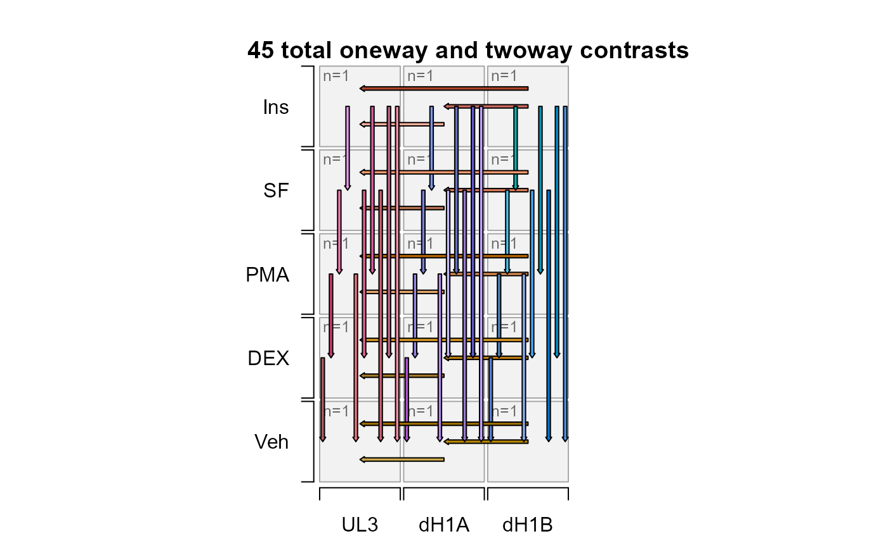
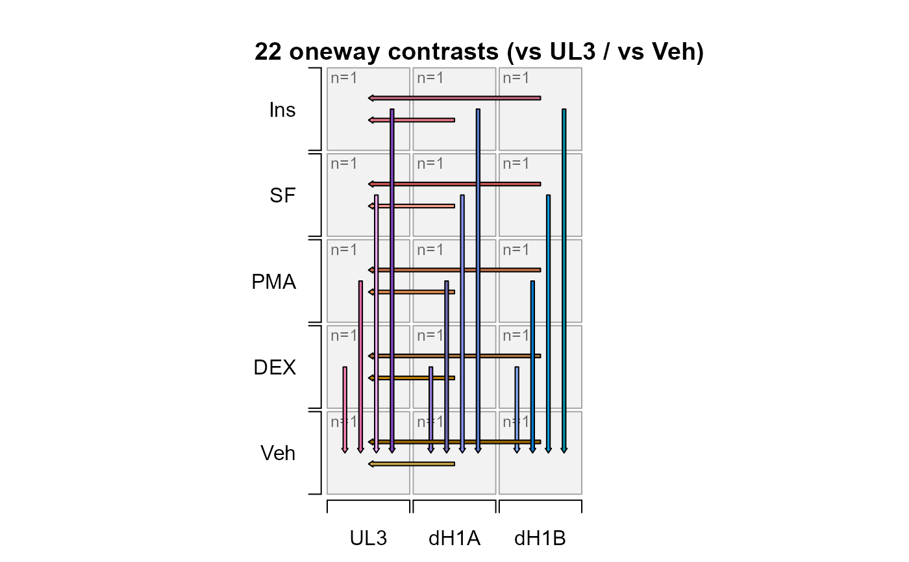
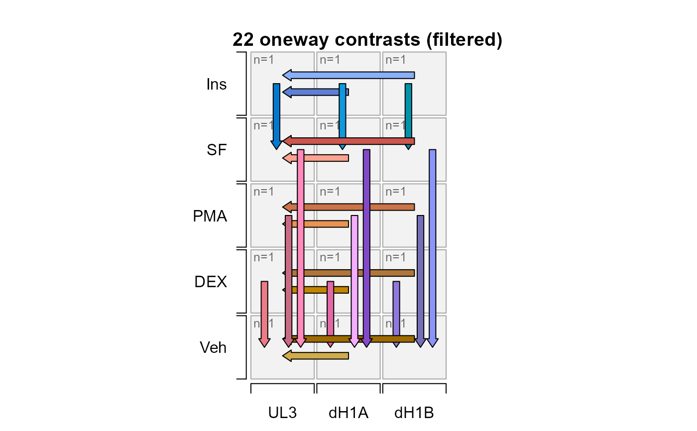
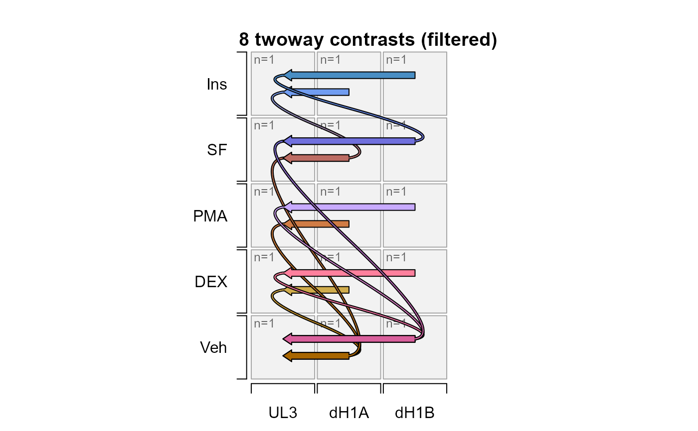
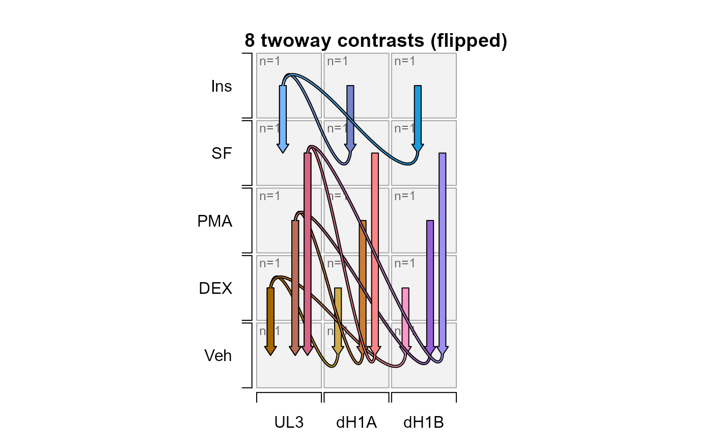

Filter contrast names
Usage
filter_contrast_names(
contrast_names = NULL,
sedesign = NULL,
factor_controls = NULL,
apply_to_sedesign = FALSE,
must_be_control = TRUE,
verbose = FALSE,
...
)Arguments
- contrast_names
charactervector of contrast names- sedesign
SEDesignobject- factor_controls
optional
charactervector with one value per experiment factor column used in the contrast names. Typically the first observed value in each column is taken as the overall control, using only the baseline control group.- apply_to_sedesign
logicalindicating whensedesignis supplied, whether to return anSEDesignobject with updatecontrasts()consistent with the contrast_names generated by this function.- must_be_control
logicalindicating whether the control factor level must also be the control in factor comparisons. Whenmust-be_control=TRUE(default) the factor comparison must be in the form (Test-Control). Whenmust_be_control=FALSEit permits the control factor level to be present as the test or control: (Control-Test) or (Test-Control).- verbose
logicalindicating whether to print verbose output.- ...
additional arguments are ignored.
Details
Utility function to help filter a large set of contrasts to a smaller set of comparisons versus specific factor level controls.
This function was motivated by a design with 5 treatments and 3 genotypes, the "all-by-all" pairwise strategy produced 45 oneway contrasts, and 75 contrasts overall.
After filtering for comparisons versus the first level per experimental factor, it produced 22 oneway contrasts, and 30 overall.
This function is still being tested to determine effective ways to pare down an enormous number of potential contrasts to the minimal set of "useful contrasts". The examples show a few use cases.
See also
Other jam experiment design:
SEDesign(),
[,SEDesign-method,
check_sedesign(),
contrast2comp(),
contrast_colors_by_group(),
contrast_names_to_sedesign(),
contrastnames(),
contrasts(),
contrasts<-(),
contrasts_to_factors(),
contrasts_to_venn_setlists(),
design,SEDesign-method,
design<-,SEDesign,matrix-method,
draw_oneway_contrast(),
draw_twoway_contrast(),
factors(),
groups(),
groups_to_sedesign(),
plot.SEDesign(),
plot_sedesign(),
print.SEDesign(),
samples(),
sedesign_to_factors(),
sort_contrasts(),
validate_sedesign()
Examples
group_names <- paste0(
rep(c("UL3", "dH1A", "dH1B"), each=5), "_",
c("Veh", "DEX", "PMA", "SF", "Ins"))
sedesign <- groups_to_sedesign(group_names)
plot_sedesign(sedesign,
which_contrasts=jamba::unvigrep("[(]", contrast_names(sedesign)),
arrow_ex=0.2, twoway_lwd=1, contrast_style="none")
title(main="45 total oneway and twoway contrasts")

new_contrast_names <- filter_contrast_names(contrast_names(sedesign))
new_contrast_names
#> [1] "dH1A_Veh-UL3_Veh"
#> [2] "dH1B_Veh-UL3_Veh"
#> [3] "dH1A_DEX-UL3_DEX"
#> [4] "dH1B_DEX-UL3_DEX"
#> [5] "dH1A_PMA-UL3_PMA"
#> [6] "dH1B_PMA-UL3_PMA"
#> [7] "dH1A_SF-UL3_SF"
#> [8] "dH1B_SF-UL3_SF"
#> [9] "dH1A_Ins-UL3_Ins"
#> [10] "dH1B_Ins-UL3_Ins"
#> [11] "UL3_DEX-UL3_Veh"
#> [12] "UL3_PMA-UL3_Veh"
#> [13] "UL3_SF-UL3_Veh"
#> [14] "UL3_Ins-UL3_Veh"
#> [15] "dH1A_DEX-dH1A_Veh"
#> [16] "dH1A_PMA-dH1A_Veh"
#> [17] "dH1A_SF-dH1A_Veh"
#> [18] "dH1A_Ins-dH1A_Veh"
#> [19] "dH1B_DEX-dH1B_Veh"
#> [20] "dH1B_PMA-dH1B_Veh"
#> [21] "dH1B_SF-dH1B_Veh"
#> [22] "dH1B_Ins-dH1B_Veh"
#> [23] "(dH1A_DEX-UL3_DEX)-(dH1A_Veh-UL3_Veh)"
#> [24] "(dH1A_PMA-UL3_PMA)-(dH1A_Veh-UL3_Veh)"
#> [25] "(dH1A_SF-UL3_SF)-(dH1A_Veh-UL3_Veh)"
#> [26] "(dH1A_Ins-UL3_Ins)-(dH1A_Veh-UL3_Veh)"
#> [27] "(dH1B_DEX-UL3_DEX)-(dH1B_Veh-UL3_Veh)"
#> [28] "(dH1B_PMA-UL3_PMA)-(dH1B_Veh-UL3_Veh)"
#> [29] "(dH1B_SF-UL3_SF)-(dH1B_Veh-UL3_Veh)"
#> [30] "(dH1B_Ins-UL3_Ins)-(dH1B_Veh-UL3_Veh)"
# apply to sedesign directly
sedesign2 <- filter_contrast_names(sedesign=sedesign, apply_to_sedesign=TRUE)
plot_sedesign(sedesign2,
which_contrasts=jamba::unvigrep("[(]", contrast_names(sedesign2)),
arrow_ex=0.2, twoway_lwd=1, contrast_style="none")
title(main="22 oneway contrasts (vs UL3 / vs Veh)")

# subset for contrasts involving certain control values
# SF is the control for factors Ins,SF, so we filter for comparisons
# where SF is the control, using `must_be_control=TRUE` (default)
# but the contrast must involve SF or Ins directly
contrast_names_sf <- filter_contrast_names(
contrast_names=jamba::vigrep("SF|Ins",
contrast_names(sedesign)))
data.frame(jamba::rbindList(strsplit(contrast2comp(contrast_names_sf), ":")))
#> X1 X2
#> 1 dH1A-UL3 SF
#> 2 dH1B-UL3 SF
#> 3 dH1A-UL3 Ins
#> 4 dH1B-UL3 Ins
#> 5 UL3 Ins-SF
#> 6 dH1A Ins-SF
#> 7 dH1B Ins-SF
#> 8 dH1A-UL3 Ins-SF
#> 9 dH1B-UL3 Ins-SF
# must_be_control=FALSE allows any orientation involving "UL3" or "SF"
# it therefore also permits "SF-Veh"
contrast_names_sf <- filter_contrast_names(
contrast_names=jamba::vigrep("SF|Ins", contrast_names(sedesign)),
must_be_control=FALSE,
factor_controls=c(Genotype="dH1A", Treatment="SF"))
data.frame(jamba::rbindList(strsplit(contrast2comp(contrast_names_sf), ":")))
#> X1 X2
#> 1 dH1A-UL3 SF
#> 2 dH1B-dH1A SF
#> 3 dH1A-UL3 Ins
#> 4 dH1B-dH1A Ins
#> 5 UL3 SF-Veh
#> 6 UL3 SF-DEX
#> 7 UL3 SF-PMA
#> 8 UL3 Ins-SF
#> 9 dH1A SF-Veh
#> 10 dH1A SF-DEX
#> 11 dH1A SF-PMA
#> 12 dH1A Ins-SF
#> 13 dH1B SF-Veh
#> 14 dH1B SF-DEX
#> 15 dH1B SF-PMA
#> 16 dH1B Ins-SF
#> 17 dH1A-UL3 SF-Veh
#> 18 dH1A-UL3 SF-DEX
#> 19 dH1A-UL3 SF-PMA
#> 20 dH1A-UL3 Ins-SF
#> 21 dH1B-dH1A SF-Veh
#> 22 dH1B-dH1A SF-DEX
#> 23 dH1B-dH1A SF-PMA
#> 24 dH1B-dH1A Ins-SF
# use must_be_control=c(FALSE, TRUE) to enforce only on the second factor
# 1. do not require UL3 to be the control in the comparison
# 2. do require SF to be the control in the comparison
contrast_names_sf <- filter_contrast_names(
contrast_names=jamba::vigrep("SF|Ins", contrast_names(sedesign)),
must_be_control=c(FALSE, TRUE),
factor_controls=c(Genotype="dH1A", Treatment="SF"))
data.frame(jamba::rbindList(strsplit(contrast2comp(contrast_names_sf), ":")))
#> X1 X2
#> 1 dH1A-UL3 SF
#> 2 dH1B-dH1A SF
#> 3 dH1A-UL3 Ins
#> 4 dH1B-dH1A Ins
#> 5 UL3 Ins-SF
#> 6 dH1A Ins-SF
#> 7 dH1B Ins-SF
#> 8 dH1A-UL3 Ins-SF
#> 9 dH1B-dH1A Ins-SF
# for the example below, use this form
contrast_names_sf <- filter_contrast_names(jamba::vigrep("SF|Ins", contrast_names(sedesign)))
data.frame(jamba::rbindList(strsplit(contrast2comp(contrast_names_sf), ":")))
#> X1 X2
#> 1 dH1A-UL3 SF
#> 2 dH1B-UL3 SF
#> 3 dH1A-UL3 Ins
#> 4 dH1B-UL3 Ins
#> 5 UL3 Ins-SF
#> 6 dH1A Ins-SF
#> 7 dH1B Ins-SF
#> 8 dH1A-UL3 Ins-SF
#> 9 dH1B-UL3 Ins-SF
# Veh is the control for all other groups, omit Ins in these comparisons
contrast_names_veh <- filter_contrast_names(jamba::unvigrep("Ins", contrast_names(sedesign)))
data.frame(jamba::rbindList(strsplit(contrast2comp(contrast_names_veh), ":")))
#> X1 X2
#> 1 dH1A-UL3 Veh
#> 2 dH1B-UL3 Veh
#> 3 dH1A-UL3 DEX
#> 4 dH1B-UL3 DEX
#> 5 dH1A-UL3 PMA
#> 6 dH1B-UL3 PMA
#> 7 dH1A-UL3 SF
#> 8 dH1B-UL3 SF
#> 9 UL3 DEX-Veh
#> 10 UL3 PMA-Veh
#> 11 UL3 SF-Veh
#> 12 dH1A DEX-Veh
#> 13 dH1A PMA-Veh
#> 14 dH1A SF-Veh
#> 15 dH1B DEX-Veh
#> 16 dH1B PMA-Veh
#> 17 dH1B SF-Veh
#> 18 dH1A-UL3 DEX-Veh
#> 19 dH1A-UL3 PMA-Veh
#> 20 dH1A-UL3 SF-Veh
#> 21 dH1B-UL3 DEX-Veh
#> 22 dH1B-UL3 PMA-Veh
#> 23 dH1B-UL3 SF-Veh
use_contrasts <- unique(c(contrast_names_veh, contrast_names_sf))
sedesign3 <- sedesign;
contrast_names(sedesign3) <- use_contrasts
# show contrasts after filtering
jamba::rbindList(strsplit(contrast2comp(contrast_names(sedesign3)), ":"))
#> [,1] [,2]
#> [1,] "dH1A-UL3" "Veh"
#> [2,] "dH1B-UL3" "Veh"
#> [3,] "dH1A-UL3" "DEX"
#> [4,] "dH1B-UL3" "DEX"
#> [5,] "dH1A-UL3" "PMA"
#> [6,] "dH1B-UL3" "PMA"
#> [7,] "dH1A-UL3" "SF"
#> [8,] "dH1B-UL3" "SF"
#> [9,] "UL3" "DEX-Veh"
#> [10,] "UL3" "PMA-Veh"
#> [11,] "UL3" "SF-Veh"
#> [12,] "dH1A" "DEX-Veh"
#> [13,] "dH1A" "PMA-Veh"
#> [14,] "dH1A" "SF-Veh"
#> [15,] "dH1B" "DEX-Veh"
#> [16,] "dH1B" "PMA-Veh"
#> [17,] "dH1B" "SF-Veh"
#> [18,] "dH1A-UL3" "DEX-Veh"
#> [19,] "dH1A-UL3" "PMA-Veh"
#> [20,] "dH1A-UL3" "SF-Veh"
#> [21,] "dH1B-UL3" "DEX-Veh"
#> [22,] "dH1B-UL3" "PMA-Veh"
#> [23,] "dH1B-UL3" "SF-Veh"
#> [24,] "dH1A-UL3" "Ins"
#> [25,] "dH1B-UL3" "Ins"
#> [26,] "UL3" "Ins-SF"
#> [27,] "dH1A" "Ins-SF"
#> [28,] "dH1B" "Ins-SF"
#> [29,] "dH1A-UL3" "Ins-SF"
#> [30,] "dH1B-UL3" "Ins-SF"
# show all one-way contrasts
plot_sedesign(sedesign3,
which_contrasts=jamba::unvigrep("[(]", contrast_names(sedesign3)),
arrow_ex=0.5, twoway_lwd=1, contrast_style="none")
title(main="22 oneway contrasts (filtered)")

# show only the two-way contrasts
plot_sedesign(sedesign3,
which_contrasts=jamba::vigrep("[(]", contrast_names(sedesign3)),
arrow_ex=0.5, twoway_lwd=1, contrast_style="none")
title(main="8 twoway contrasts (filtered)")

# same two-way contrasts, showing flipped orientation
plot_sedesign(sedesign3,
flip_twoway=TRUE,
which_contrasts=jamba::vigrep("[(]", contrast_names(sedesign3)),
arrow_ex=0.5, twoway_lwd=1, contrast_style="none")
title(main="8 twoway contrasts (flipped)")
